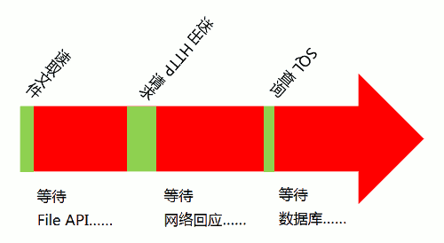

单线程红色为等待时间
程序中设置两个线程：一个负责程序本身的运行，称为"主线程"；另一个负责主线程与其他进程（主要是各种I/O操作）的通信， 被称为"Event Loop线程"（可以译为"消息线程"）。上图主线程的绿色部分，还是表示运行时间，而橙色部分表示空闲时间。 每当遇到I/O的时候，主线程就让Event Loop线程去通知相应的I/O程序，然后接着往后运行，所以不存在红色的等待时间。 等到I/O程序完成操作，Event Loop线程再把结果返回主线程。主线程就调用事先设定的回调函数，完成整个任务称为"异步模式" （asynchronous I/O）或"非堵塞模式"（non-blocking mode）